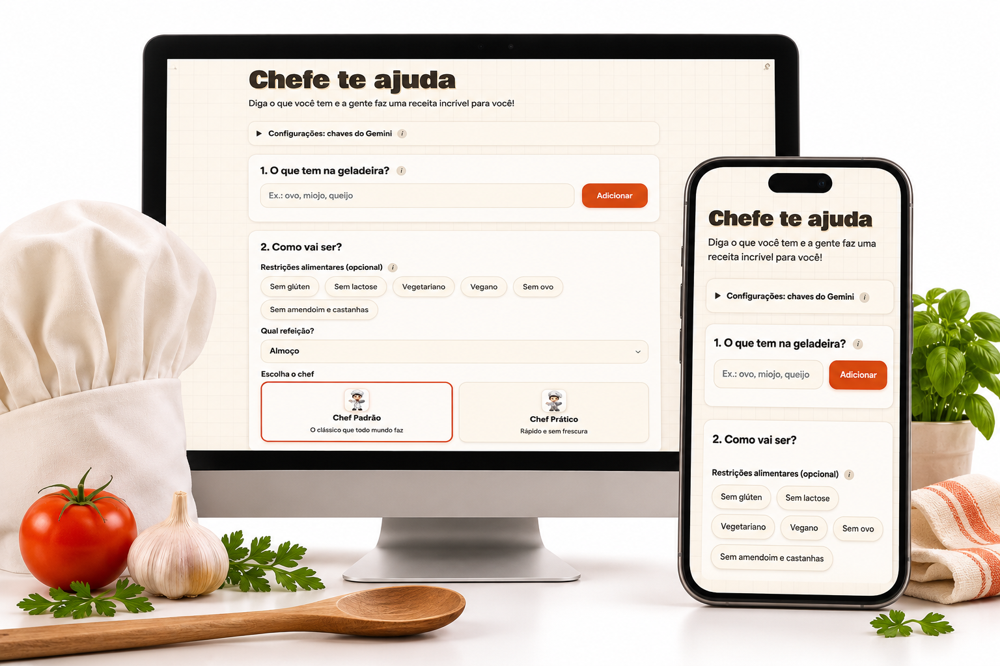
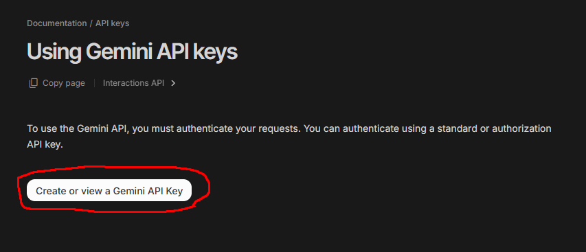
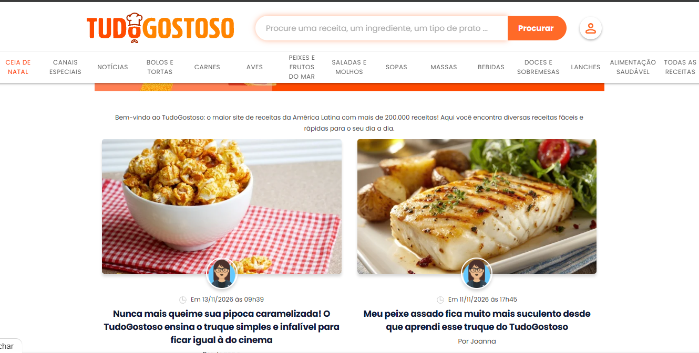

O que é o Chefe te ajuda?
Sabe aquele momento em que você abre a geladeira, olha para aqueles ingredientes espalhados e não sabe o que fazer? É exatamente aí que o Chefe te ajuda entra.
O site é uma aplicação web que transforma ingredientes avulsos em uma receita completa, detalhada e adaptada ao seu estilo de cozinha. Você informa o que tem em casa, escolhe um dos quatro chefs virtuais e, em segundos, recebe um modo de preparo passo a passo gerado por inteligência artificial.
Objetivo principal: te ajudar a montar um prato de forma prática e divertida.
- Consulta dados nutricionais reais de produtos (calorias, alérgenos, Nutri-Score).
- Busca receitas verdadeiras na web e as usa como referência para a IA.
- Gera um modo de preparo rico e didático usando o Google Gemini.
- Oferece quatro personalidades de chef com estilos e objetivos diferentes.

Tela principal do aplicativo
Criando sua chave de API do Gemini
Para que o chef possa gerar receitas, o site precisa se comunicar com o Google Gemini, que é o modelo de inteligência artificial utilizado. Essa comunicação é feita por meio de uma chave de API — basicamente, uma senha que identifica quem está fazendo o pedido ao serviço do Google.
A boa notícia: a chave é totalmente gratuita e fácil de obter. Veja como:
- Acesse aistudio.google.com/apikey com sua conta Google.
- Clique em "Create API key" e selecione um projeto (ou crie um novo).
-
Copie a chave gerada (começa com
AIza...). - No site, abra a seção "Configurações: chaves do Gemini", cole a chave e clique em Salvar.
Você pode adicionar várias chaves — uma por linha. O app faz o rodízio automático entre elas quando uma atinge o limite de requisições, garantindo que o serviço continue funcionando sem interrupção.

Tela de configuração das chaves do Gemini
Web Scraping no TudoGostoso
Antes de acionar a IA, o aplicativo vai até a internet buscar receitas reais. Essa técnica se chama web scraping: o servidor da aplicação acessa automaticamente páginas de um site, lê o HTML retornado e extrai as informações úteis — como título, ingredientes e modo de preparo.
O site consultado é o TudoGostoso, um dos maiores portais de receitas do Brasil. O processo funciona assim:
- O backend recebe os ingredientes digitados pelo usuário.
- Faz uma busca no TudoGostoso usando esses ingredientes como termo de pesquisa.
- Coleta os links das receitas encontradas (até 8 resultados).
- Acessa cada link e extrai os dados usando a biblioteca Cheerio (que lê e seleciona elementos do HTML como se fosse um jQuery no servidor).
- As receitas extraídas são entregues ao Gemini como referência gastronômica sólida.
Como os navegadores não podem acessar outros sites diretamente por razões de segurança (política CORS), todo esse processo acontece no servidor Node.js, que atua como um intermediário invisível entre o usuário e a web.

Exemplo de busca de receitas no portal TudoGostoso
Open Food Facts — Dados Nutricionais Reais
O Open Food Facts é um banco de dados aberto e colaborativo com informações nutricionais de produtos alimentícios de todo o mundo. Pense nele como o "Wikipédia dos alimentos": qualquer pessoa pode contribuir, e os dados são gratuitos para uso.
No aplicativo, quando o usuário digita um ingrediente e clica na 🔍 lupa, o site consulta a API do Open Food Facts para identificar o produto industrializado correspondente. Com isso, o app obtém dados reais como:
- Calorias por 100g e macronutrientes (proteínas, carboidratos, gorduras).
- Alérgenos declarados (glúten, lactose, ovos, amendoim etc.), que ativam os alertas de restrição alimentar na interface.
- Nutri-Score (escala de A a E), exibido no semáforo colorido da receita gerada.
- Grupo NOVA, que classifica o grau de processamento do alimento.
Essas informações chegam ao Gemini junto com os ingredientes, tornando a receita gerada muito mais precisa em termos nutricionais. O chef Nutri, por exemplo, usa esses dados para priorizar ingredientes com maior valor proteico e menor grau de processamento.
Google Gemini — O Cérebro da Receita
O Google Gemini é o modelo de linguagem (LLM) responsável por gerar a receita final. Ele não recebe apenas uma pergunta simples como "o que fazer com ovo e queijo?" — ele recebe um prompt de engenharia estruturada, montado a partir de três fontes de dados combinadas.
Dentro do prompt enviado ao Gemini estão:
- A personalidade e o objetivo do chef escolhido (ex: o Chef Mirabolante prioriza técnicas avançadas; o Chef Prático quer poucos ingredientes e passos curtos).
- A lista de ingredientes do usuário com seus dados nutricionais da Open Food Facts.
- A receita raspada do TudoGostoso mais adequada ao perfil do chef, usada como referência técnica e gastronômica.
- As restrições alimentares ativas e o tipo de refeição desejado (café da manhã, almoço, lanche ou jantar).
O Gemini responde sempre em JSON estruturado, com campos como nome do prato, passos detalhados (cada um com título, descrição rica e tempo de preparo em segundos), lista de ingredientes com proporções, macronutrientes estimados e até sugestões de substituição para ingredientes que faltem.
O app suporta múltiplas chaves e modelos com fallback automático: se um modelo atingir o limite, o sistema tenta o próximo automaticamente — tudo transparente para o usuário.